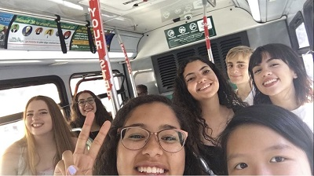
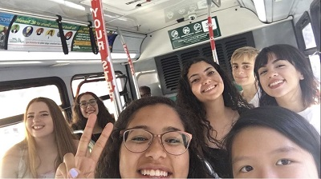

Allie's Summer Vacation
This summer was full of many great memories. I travelled to places
like Puerto Rico,
California and Orlando.
Puerto Rico
During June, I travelled to Puerto Rico--where I've lived for most of my life--to visit family
and friends.
It was an endearing experience because I had not seen them in a while. We hung out at popular places like:
Viejo San Juan
Playa Sardinera
Horseback riding in Isabella
My friends and I ate popsicles from a really good shop called "Señor Paleta." I also visited my greatgrandma,
whom
I had not seen in a while. I was in Puerto Rico for almost 3 weeks before I had to head back home.
California
After Puerto Rico, I headed off back home to pack my bags and leave to California for 5 weeks. I had received
scholarship
from the California College of the Arts to attend a Pre-college program. The college is located in
Oakland, CA, right next to San Francisco. In the program, I met so many increbibly talented and kind people whom have
stayed in contact with me to this day.
My Summer overall was an amazing, fortunate and even eye-opening experience.
I hope that the next one will be the same or better yet.
Summer 2017

 

By Alejandra Torres-Lopez